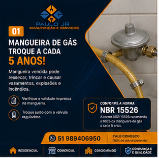
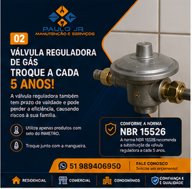
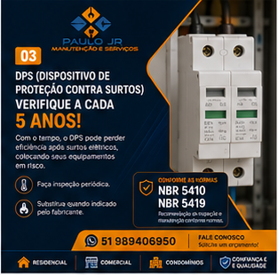
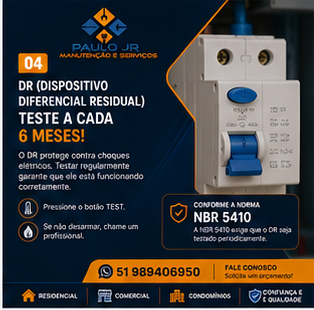
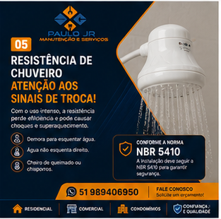
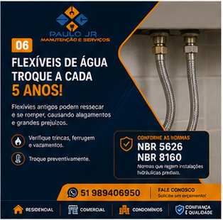
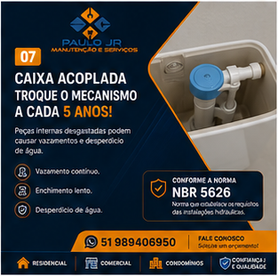

Manutenção bem feita, do jeito que sua casa precisa.
Elétrica, hidráulica, reparos e pintura para residências, comércios e condomínios. Peça um orçamento e fale direto com o Paulo Jr.
O que eu resolvo
-
Elétrica
Tomadas, interruptores, disjuntores, DR, DPS e revisão do quadro elétrico.
-
Hidráulica
Vazamentos, flexíveis, boias, caixa acoplada, ralos, filtros e chuveiros.
-
Reparos e montagem
Fixação de espelhos, vedação de janelas, calhas e pequenos consertos.
-
Pintura
Pintura e impermeabilização para proteger contra umidade e mofo.
Atendimento residencial, comercial e para condomínios.
Quando revisar cada item
Dicas de manutenção preventiva que publico no Instagram. Evite surpresas e gastos maiores.







Precisa de um orçamento?
Mande uma mensagem contando o que precisa. Respondo o mais rápido possível.